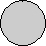

The White Coordinator captures the Black Pinching Pawn at a4
The Coordinator
The Coordinator moves like an ortho-chess Queen, but captures in a special way: it captures by 'coordinating' with the King. When a Coordinator moves, any enemy piece that is on the same rank (or row) as the Coordinator, and the same file (or column) as the King, is captured. And vice-versa, any enemy piece that is on the same file as the King, and on the same rank as the Coordinator, is also captured.The Coordinator never captures when another piece moves. It only captures on its own move.
See also: the Coordinator entry in our Piececlopedia.
The Black Long Leaper captures both White Pinching Pawns by leaping over them
The Long Leaper
The Long Leaper moves like an ortho-chess Queen, but captures in a special way: it captures by leaping over an enemy piece. The enemy piece must have a vacant square directly behind it (behind relative to the location of the Long Leaper). The Long Leaper jumps over the enemy piece and lands in any of the vacant squares behind it. The Long Leaper cannot jump over friendly pieces, but it may make multiple leaps in a single direction.The Long Leaper leaps in a straight line in any of the eight directions.
In the diagram to the left, the White Long Leaper could make any of the following moves:
- a1-a3 (xa2)
- a1-a4 (xa2)
- a1-a6 (xa2) (xa5)
- a1-a7 (xa2) (xa5)
- a1-a8 (xa2) (xa5)
See also: the Long Leaper entry in our Piececlopedia.
The Black Withdrawer on b3 captures the White Pinching Pawn on b4 by moving away from it
The Withdrawer
The Withdrawer moves like an ortho-chess Queen, but captures in a special way: it captures by moving directly away from an enemy piece. It must start its move adjacent to the enemy piece, and move one or more squares in a straight line directly away from that piece. The piece moved away from is then captured.See also: the Withdrawer entry in our Piececlopedia.
Black Immobilizer paralyzes the White Chameleon, Pinching Pawn, Long Leaper, and King
The Immobilizer
The Immobilizer moves like an ortho-chess Queen, but is unable to capture. Instead, the Immobilizer paralyzes any adjacent enemy pieces, causing them to be immobile. The Immobilizer does not paralyze friendly pieces, nor does it paralyze non-adjacent pieces that move past or over it. Pieces that can never capture an Immobilizer are: Kings, Immobilizers, Chameleons, and Withdrawers. Pieces become unparalyzed when the Immobilizer paralyzing them moves away or is captured.In the diagram to the left, the White Chameleon is paralyzed by the Black Immobilizer, and in return, the Black Immobilizer is paralyzed by the White Chameleon. On White's next move, the Long Leaper (at d3) can capture the Black Immobilizer by leaping to a3.
Any piece that is paralyzed by an Immobilizer, is allowed to capture itself (ie. commit suicide). This counts as the player's move.
See also: the Immobilizer entry in our Piececlopedia.
The White Pinching Pawn on b1 captures the Black Withdrawer on b4 by pinching it between itself and the White King
 The Pinching Pawn
The Pinching Pawn
The Pinching Pawn moves like an ortho-chess Rook, but captures in a
special way:
it captures by pinning an enemy piece between itself and another
friendly piece. So when a White Pinching Pawn moves to a square, if
there is a
Black piece directly to the east of it, with a White piece directly to
the east of the Black piece, then then Black piece is captured. The
same holds
true for pieces to the west, north, and south of the destination
square.
Pinching Pawns only capture when they make a move. They never capture passively. So a piece moving directly between two Pinching Pawns is not captured.
See also: the Pinching Pawn entry in our Piececlopedia.
 The Chameleon
The Chameleon moves like an ortho-chess Queen, but captures in a special way: it captures an enemy piece using the enemy piece's method of capturing. The diagram to the left is an illustration of the Chameleon capturing seven pieces in one move.- It captures the enemy Withdrawer (at c1) by moving away from it.
- It captures the two enemy Long Leapers by leaping over them.
- It captures the three enemy Pinching Pawns by pinching them.
- It captures the enemy Coordinator by coordinating with the King.
Note that the Chameleon can only capture Pinching Pawns by moving like a Rook. Chameleons can never capture enemy Chameleons, but they can paralyze an enemy Immobilizer by moving adjacent to it (of course, in that case, the Chameleon itself is also paralyzed).
In the diagram to the left, the White Chameleon also gives check to the Black King.
See also: the Chameleon entry in our Piececlopedia.